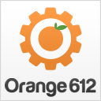

BarCamp Lima 5
Webmakers: Constructores de la Web
24 de marzo de 2012, desde las 9:30am
Universidad Tecnológica del Perú
Hashtag: #BarcampLima
24 de marzo de 2012, desde las 9:30am
Universidad Tecnológica del Perú
Hashtag: #BarcampLima

BarCamp Lima es posible gracias al apoyo en:

BarCamp Lima es desde 2008 el espacio de diálogo y aprendizaje en la ciudad de Lima que reúne a especialistas en tecnologías web.